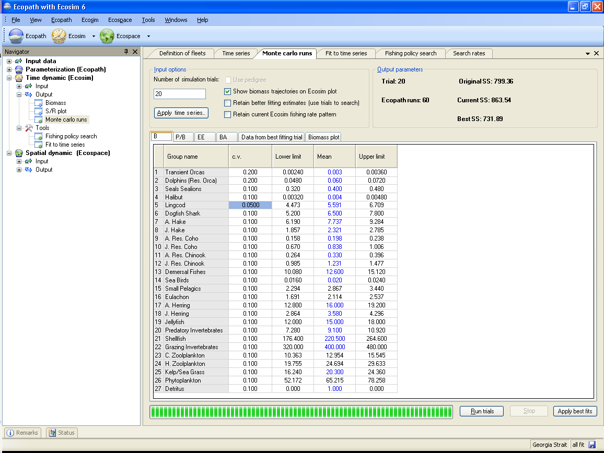
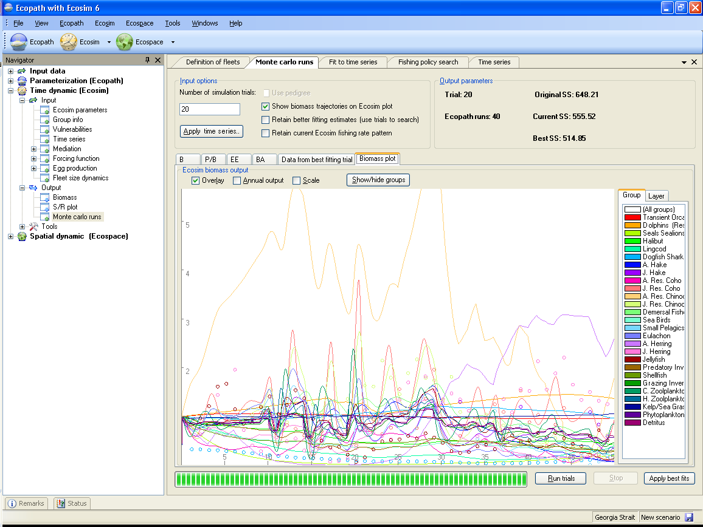

Ecosim allows users to use a Monte Carlo approach to search for Ecopath parameter-combinations that improve the fit of the model to time series data (i.e., reduce the weighted sum of squared deviations, SS; see Time series fitting in Ecosim). The Monte Carlo approach can be used to test for sensitivity of Ecosim’s outputs to Ecopath input parameters.
To use the Monte Carlo interface, open the Monte carlo runs form (Time dynamic (Ecosim) > Output > Monte carlo runs; Figure 9.6).
Set the number of trials. Each trial represents an Ecosim run with a randomly-selected set of Ecopath parameters (B, P/B, EE, BA) for each group. Parameters are drawn from a uniform distribution centred on the base Ecopath value with coefficient of variation (c.v.) set by the user.
Displays Ecosim results on the Biomass plot tab in the lower panel of the form.
Retains …
Retains
Opens a dialogue box where you can apply time series that have been loaded into Ecosim (i.e., you do not have to return to the Time series form to apply time series). You can also remove time series from the analysis using this dialogue box. See Time series for more information about loading time series in Ecosim.
The Ecopath parameters tabs in the lower panel show the mean, lower limit and upper limit of the distribution used to draw random values for B, P/B, EE and BA for each group in the model. The mean of the distribution is set as the base Ecopath value of the parameter. Users can set the coefficient of variation (c.v.) which is then used to calculate the upper and lower limits of the distribution (upper limit = mean + 2*c.v.*mean; lower limit = mean - 2*c.v.*mean). For parameters you do not wish to change, set the c.v. to zero. Setting the c.v. for a group for one parameter applies the same c.v. to all parameters.
Note that the parameter combinations resulting from the random draw must result in a balanced Ecopath model (i.e., before running each trial, Ecosim keeps drawing new sets of parameters until a balanced Ecopath model is achieved). This means that the range of the parameter values actually used may be smaller than that set by the user. Users should check the range of the input parameters that were actually used in the trials in the output csv (see below).
Tracks the current trial number.
Tracks the number of parameter-combinations tried until a balanced Ecopath model is achieved. Note that the maximum number of tries is 2000. If a trial reaches 2000 Ecopath runs then a balanced model could not be achieved with any parameter combinations and the simulation trial is run with an unbalanced model. This may indicate that the c.v.s have been set too large, reducing the likelihood of finding parameter values that combine to produce a balanced model.
At the top right-hand side of the form, the original (i.e., before the simulation) weighted sum of squared deviations (SS) is shown. Current SS shows the value of SS achieved for the current trial. Best SS shows the lowest SS achieved for any of the runs.
After all trials have been completed, the parameter-values that resulted in the lowest SS are shown on the second-last tab in the lower panel of the form. When the trials are complete, the software automatically displays this tab.
If the Show biomass trajectories on Ecosim plot box is checked, biomass trajectories are displayed for each trial on the Biomass plot tab (Figure 9.7). This tab is automatically displayed when you click Run trials.
You can choose to overlay trajectories for each trial, switch from monthly to annual output and scale the results using check boxes. Show/hide groups, highlighting of trajectories for a single group and viewing of layers is also enabled, with the same functionality as for the Biomass form.
The Apply best fits button applies the parameter-values that resulted in the lowest SS (shown on the Data from best fitting trial tab) to your Ecopath model (i.e., overwrites the original values).
Warning: it is a good idea to save a backup of your model using Save as on the File menu before you overwrite your original parameters using Apply best fits!
Not implemented yet

Figure 9.6

Figure 9.7